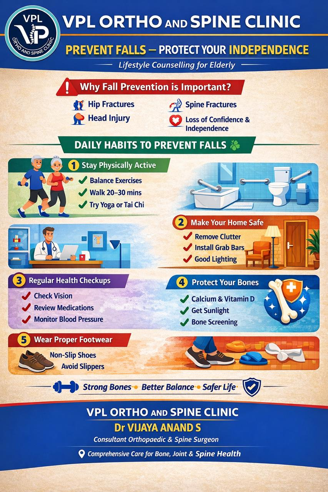
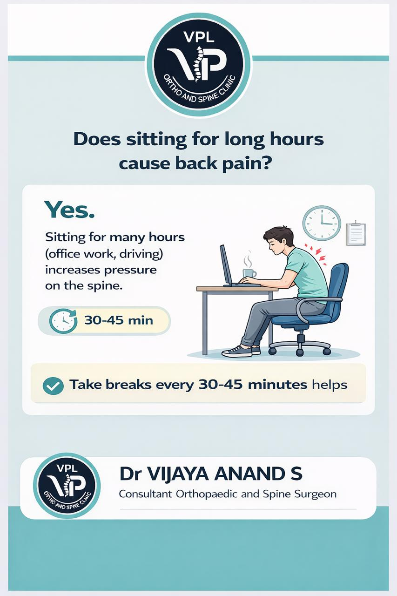
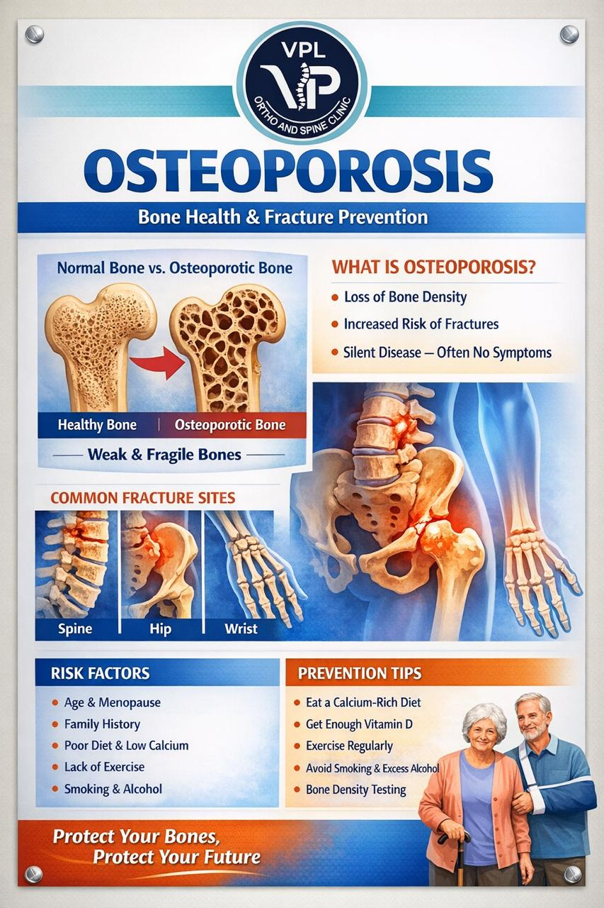

A 42-year-old male presented to our clinic following a workplace accident where he sustained a complex fracture of his right forearm. The injury occurred when a heavy object fell on his arm during construction work.
The X-ray examination revealed:
Given the complexity of the fracture and joint involvement, surgical intervention was recommended for:
Approach:
Reduction and Fixation:
Week 1-2:
Week 3-6:
Week 6-12:
The patient reported:
This case demonstrates successful management of a complex upper extremity fracture through modern surgical techniques and comprehensive rehabilitation. The outcome highlights the importance of anatomical restoration, rigid fixation, and patient compliance with rehabilitation protocols.
For expert management of complex fractures and orthopedic injuries, contact VPL Ortho and Spine Clinic at +91 9042353157.

A 62-year-old retired teacher presented with progressive back pain and bilateral leg pain, significantly affecting her ability to walk and perform daily activities. Symptoms had been worsening over 2 years despite conservative treatments.
Physical Findings:
X-ray Lumbar Spine:
MRI Lumbar Spine:
Surgical intervention was recommended due to:
Procedure Recommended:
Approach and Exposure:
Decompression:
Fusion and Reconstruction:
Week 1-2:
Week 3-6:
Week 6-12:
Month 3-6:
Clinical Assessment:
Radiological Assessment:
This case demonstrates successful management of complex spinal stenosis with spondylolisthesis through decompression and fusion surgery. The outcome highlights the importance of proper patient selection, meticulous surgical technique, and comprehensive rehabilitation for optimal results.
For expert evaluation and treatment of complex spine conditions, contact VPL Ortho and Spine Clinic at +91 9042353157.

Falls are a leading cause of injury, especially among older adults. According to studies, one in four adults aged 65 and older falls each year. Falls can lead to serious injuries, including fractures, head injuries, and reduced quality of life. The good news is that most falls are preventable.
High-Risk Groups:
If you fall and can get up:
If you fall and can't get up:
After a fall, see a doctor if you:
Remember, fall prevention is a team effort involving you, your family, and healthcare providers. Taking these preventive steps can significantly reduce your risk of falls and maintain your independence.
For personalized fall risk assessment and orthopedic care, contact VPL Ortho and Spine Clinic at +91 9042353157.

A 38-year-old software engineer presented with severe sciatic pain affecting his right leg, preventing him from working and performing daily activities. The pain had been progressively worsening over 3 months despite conservative treatment.
Neurological Findings:
MRI Lumbar Spine revealed:
After 3 months of failed conservative treatment, surgical intervention was recommended due to:
Patient elected to proceed with microdiscectomy for optimal visualization and proven outcomes.
Approach and Exposure:
Microscopic Discectomy:
Week 1-2:
Week 3-6:
Week 6-12:
Clinical Assessment:
Patient-Reported Outcomes:
This case demonstrates the successful management of lumbar disc herniation using microdiscectomy, resulting in rapid pain relief and return to normal function. The minimally invasive approach provided excellent visualization while minimizing tissue trauma and recovery time.
For expert evaluation and treatment of spine conditions including disc herniations, contact VPL Ortho and Spine Clinic at +91 9042353157.

Back pain is one of the most common health problems affecting people of all ages. It can range from a dull, constant ache to a sudden, sharp pain that makes it difficult to move. The good news is that most back pain can be prevented with proper habits and lifestyle modifications.
Postural Issues:
Lifestyle Factors:
Medical Conditions:
Contact your orthopedic specialist if you experience:
Depending on the cause and severity, treatment may include:
Remember, prevention is always better than cure. By adopting these healthy habits, you can significantly reduce your risk of developing back pain and maintain a healthy, active lifestyle.
For personalized assessment and treatment of back pain, visit VPL Ortho and Spine Clinic. Call +91 9042353157 for an appointment.

In today's digital world, most of us spend hours sitting - at desks, in meetings, commuting, or relaxing at home. This sedentary lifestyle is taking a toll on our spine health. Prolonged sitting can lead to chronic back pain, poor posture, and long-term spinal problems.
Physical Effects of Prolonged Sitting:
Seek medical attention if you experience:
Benefits of Proper Sitting Habits:
Remember, your body is designed to move. While modern life requires sitting, being mindful about how you sit and incorporating regular movement can protect your spine and overall health.
For personalized ergonomic advice and treatment of sitting-related pain, visit VPL Ortho and Spine Clinic. Call +91 9042353157 to schedule an appointment.

A 68-year-old retired bank manager presented with severe knee pain that had progressively worsened over 8 years, significantly limiting her ability to walk, climb stairs, and enjoy her retirement activities.
Physical Findings:
X-ray Right Knee:
MRI Knee (if indicated):
Total knee replacement was recommended based on:
Implant Selection:
Approach and Exposure:
Bone Preparation:
Component Implantation:
Week 1-2:
Week 3-6:
Week 6-12:
Clinical Assessment:
Radiological Assessment:
Patient-Reported Outcomes:
Functional Achievements:
This case demonstrates successful management of end-stage knee osteoarthritis through total knee replacement surgery. The outcome highlights the importance of proper patient selection, meticulous surgical technique, and comprehensive rehabilitation for optimal long-term results.
For expert evaluation and treatment of knee arthritis and joint replacement, contact VPL Ortho and Spine Clinic at +91 9042353157.

Osteoporosis is a silent bone disease that weakens bones, making them fragile and more likely to break. It occurs when the body loses too much bone, makes too little bone, or both. This condition affects millions of people worldwide, particularly women after menopause and older adults.
Major risk factors include:
Calcium: Adults need 1000-1200mg daily
Vitamin D: Essential for calcium absorption
Consult your orthopedic specialist if you:
If diagnosed with osteoporosis, treatment may include:
Remember, osteoporosis is preventable and manageable. Early detection and intervention can significantly reduce your risk of fractures and maintain bone health.
For personalized assessment and treatment, contact VPL Ortho and Spine Clinic at +91 9042353157.

Vitamin D, often called the "sunshine vitamin," is a fat-soluble vitamin that plays a crucial role in bone health and overall wellness. Unlike other vitamins, our body can produce vitamin D when exposed to sunlight, making it unique among essential nutrients.
Key Functions:
Common Risk Factors:
Symptoms of Deficiency:
Natural Sources:
Fortified Foods:
Age Groups:
Higher Doses May Be Needed For:
When to Test:
Blood Test:
Upper Safe Limits:
Symptoms of Excess:
Seek medical advice if you:
Remember, vitamin D is essential for bone health and overall wellness. Maintaining adequate levels through sun exposure, diet, and supplementation when necessary can help prevent bone problems and support your overall health.
For personalized vitamin D assessment and bone health evaluation, visit VPL Ortho and Spine Clinic. Call +91 9042353157 to schedule your appointment.

Welcome to our blog! Here at VPL Ortho and Spine Clinic, we are committed to educating our patients and the community about orthopedic health, spine care, and preventive measures.
Our goal is to empower you with knowledge so you can make informed decisions about your orthopedic health. Whether you're dealing with chronic pain, recovering from an injury, or simply want to maintain healthy joints and spine, our blog is here to help.
Stay tuned for regular updates from our experienced orthopedic specialists!
For appointments or consultations, contact us at +91 9042353157.